Total sales
500%
In a single year
Client
Where the revenue came from
1
One channel doing all the work
A year later
500%

Mob ArmorWorking together
4
Channels — not one
See what’s possible for yours.
Tap the link →